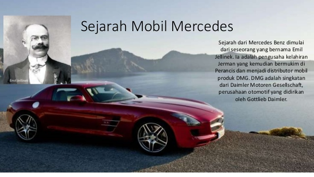

Dan Siapa Pendirinya
Siapa yang tidak tahu dan tidak kenal dengan Mercedez Benz, perusahaan mobil eksklusif asal Jerman. Mobil merk ini juga sering terlihat di jalanan, tapi apakah anda mengetahui awal mula berdirinya perusahaan mobil ini? inilah sedikit cerita sejarah tentang perkembangan mobil Mercedez Benz dari nol hingga kesuksesannya sekarang ini. Mari kita simak ulasannya!
Sejarah dari Mercedes Benz dimulai dari seseorang yang bernama Emil Jellinek. Ia adalah pengusaha kelahiran Jerman yang kemudian bermukim di Perancis dan menjadi distributor mobil produk DMG. DMG adalah singkatan dari Daimler Motoren Gesellschaft, perusahaan otomotif yang didirikan oleh Gottlieb Daimler.
Suatu hari, Emil Jellinek meminta Wilhelm Maybach, kepala desainer DMG, agar membuat mobil yang cepat, ringan dan aman. Maybach merupakan orang yang mendisain mobil truk pertama di dunia dan pada tahun 1896 truk ciptaannya mulai diproduksi. Mulai tanggal 1Oktober 1896, mobil hasil rancangannya ini di ekspor untuk pertama kalinya ke London. Nama Maybach nantinya akan diabadikan dalam bentuk mobil canggih Mercedes Benz Luxury Saloon.

Pada tanggal 2 April 1900, Maybach mulai membuat mobil atas permintaan Emil Jellinek. Hal itu merupakan tonggak sejarah “Mercedes Benz”. Nama Mercedes diambil dari anak perempuan Emil Jellinek yang bernama Mercedes Jellinek. Penggunaan nama anak itu merupakan bentuk kasih sayang Emil Jellinek sebagai orang tua kepada putrinya.
Emil Jellinek selalu merasa bahwa membangun image komersial dengan memilik nama merek dagang sangatlah penting. “Mercedes” dalam bahasa Spanyol atau “Merci” dalam bahasa Perancis mempunyai arti yang positif, yaitu “penuh rasa terima kasih” atau dalam bahasa Latin yang berarti “anugerah yang menyenangkan”.
Mobil pertama DMG yang dinamai “Mercedes” diluncurkan pada 22 Desember 1900, dan nama itu kemudian dipatenkan sebagai merek dagang di tahun 1902.Pada tahun 1926, DMG dan Cie (perusahaan milik Karl Benz) menyatukan perusahaan mereka. Sehingga nama perusahaan itu berubah menjadi “Mercedes Benz”. Karl Benz merupakan seorang pembuat mobil penumpang yang dipatenkan dengan nama “Benz Patent Motorwagen Omnibus”. Dari kesepakatan penyatuan perusahaan inilah muncul truk diesel enam silinder yang pertama di dunia dan dinamakan Mercedes Benz L-5.
Di tahun 1998, Mercedes Benz kembali bekerja sama dengan perusahaan lain yaitu Chrysler Corporation yang merupakan raksasa industri otomotif di Amerika Serikat. Nama “Chrysler” diambil dari sang penemu yang berasal dari Amerika Serikat, Walter P Chrysler. Di Asia, DaimlerChrysler melakukan kerjasama dengan Mitsubishi Motors (perusahaan asal Jepang) dan Hyundai Motor (perusahaan asal Korea Selatan).
Sampai saat ini Mercedes Benz telah berusia satu abad lebih dan merupakan salah satu dari lima pabrik mobil terkemuka di dunia.